This website provides general information about a variety of mental disorders, but it is not intended to replace a professional diagnosis. Please consult the doctor for a medical diagnosis and treatment plan.
This content on this page is opinionated and not fully factual. If you are looking for facts about specific mental disorders, please proceed to other pages available on this site. This page is an opinion on a matter regarding the topic of mental illnesses.
What it means to romanticize mental disorders?
Romanticising is the action of either presenting or believing something as being better or more interesting then what it is it reality. This action can also be called: Glorify, Glamourize, Idealize, etc.
Although Mental Health does deserve acknowledgment, today's society has normalised and romanticized the issue and majority of society now believes it's either normal, a fad, or non-existent.
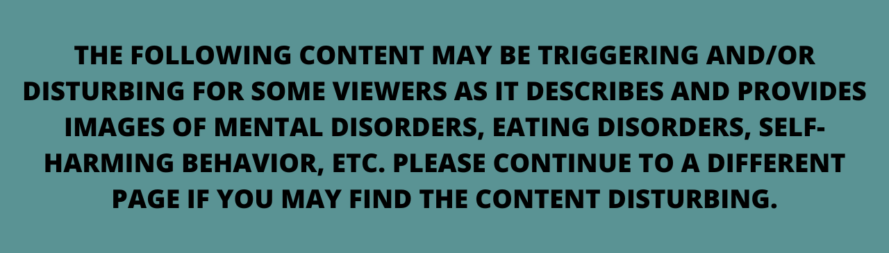
Because mental illnesses are more commonly known in todays society, many decided to depict it as beautiful, romantic, aesthetic, when in reality, it's far from it. People often enjoy finding things to poke fun at and romanticize, which in this case is mental illnesses which are far from pretty or beautiful.
Included in this page are examples of mental illness romanticisation and if you may find it triggering or disturbing, press the button below to skip past the images.
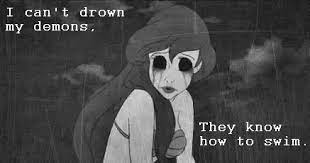
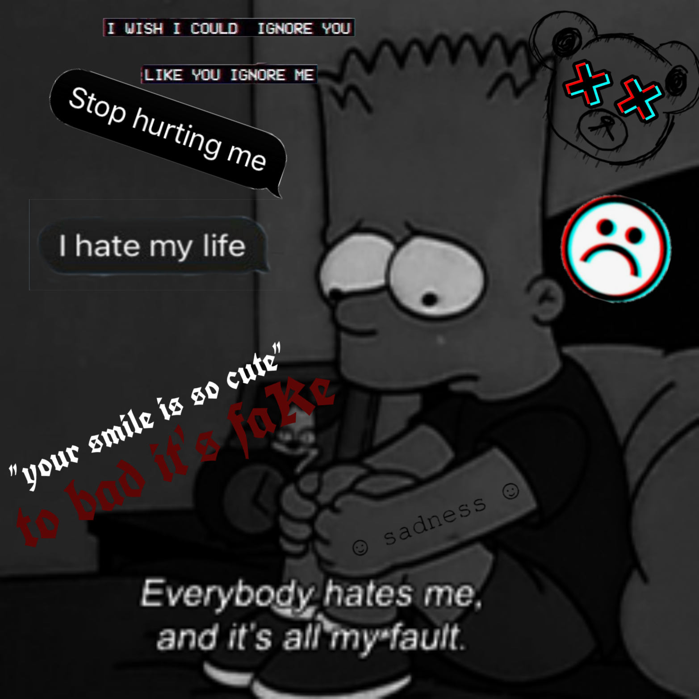
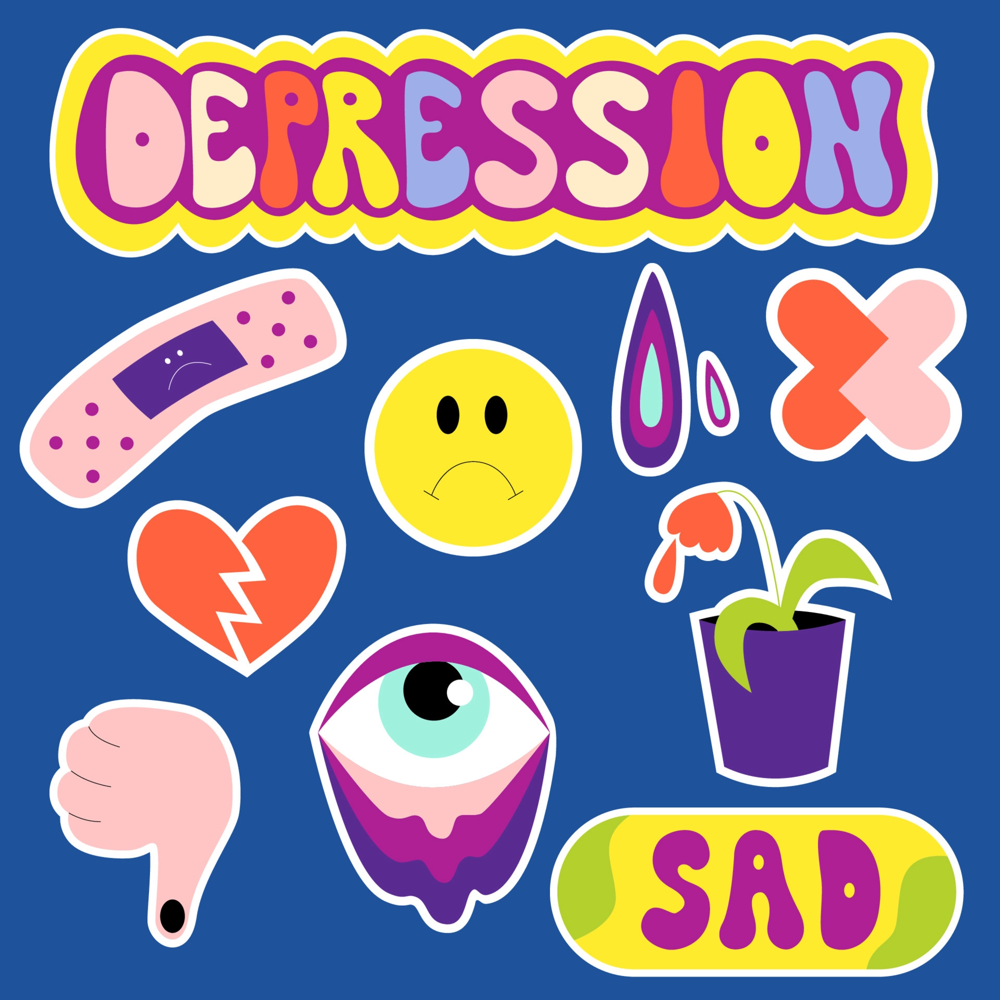
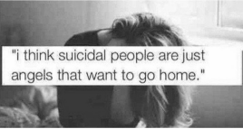
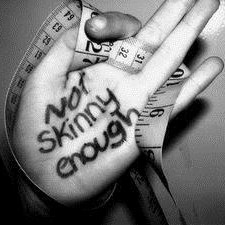
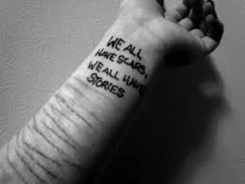
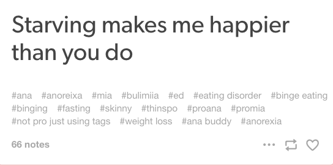
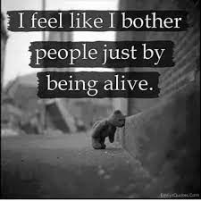
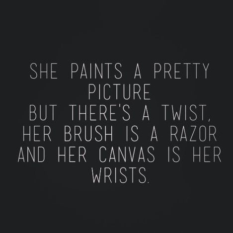
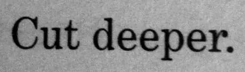
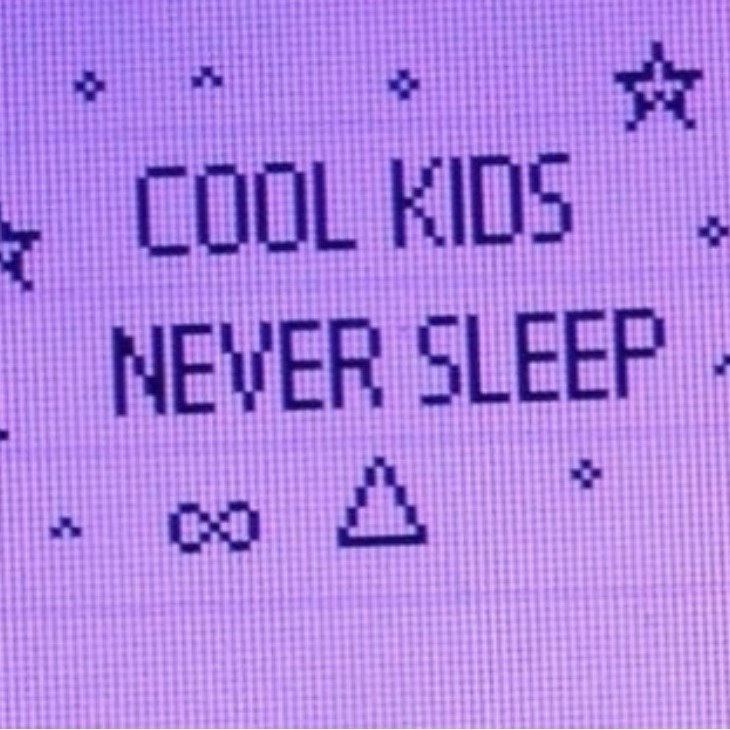
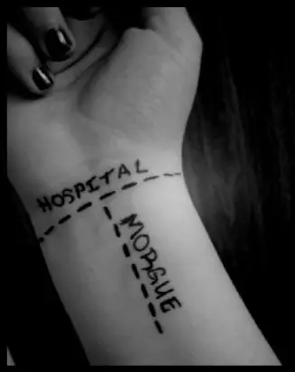
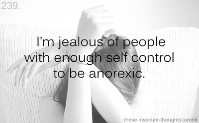
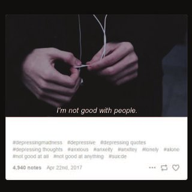
Having a mental illnesses is not cute, and not something most are proud of. Being Depressed is not feeling sad and deciding to change your wallpaper to an 'aesthetic' collage of dark images and self-deprecating messages. Depression is digging a hole for yourself, feeling numb day in and day out, until you finally find the strength to get help and climb back out of that hole.
Stop romanticizing mental illness. It's not cute. It's not beautiful. It is not quirky. It is not something to be romanticized and celebrated unless in the instance that it's the recovery of someone. It is a serious problem that does deserve attention and recognition, but not glorification.

© Copyright 2022